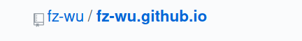

sphinx博客搭建
刚刚进入了2020年,python2正式退出了历史舞台.而网上大部分的sphinx都是基於python2搭建的,可能以后会有各种兼容性的问题.所以這裏使用python3環境搭建.
環境:
mkdir blog # 新建一個博客文件夾
cd blog
virtualenv envs # 新建一個虛擬環境
source envs/bin/activate # 激活虚拟环境
pip3 install sphinx sphinx-autobuild sphinx-rtd-theme
sphinx-quickstart # 創建目錄樹
配置:
.
├── build
├── dp.sh
├── make.bat
├── Makefile
├── README.md
├── source
└── venv
你創建的博客目錄沒有dp.sh和README.md這兩個文件,第一個是我push用的,第二個是git目錄要求的.
其中make.bat和Makefile都是部署文件用不到,我們寫的博客都應該放在source目錄中.bliud目錄用來放置生成的HTML文件. 讓我們進source目錄看看.
├── _build
├── conf.py
├── index.rst
├── linux
├── net_work
├── _static
├── _templates
├── 关于博客
├── 关于程序配置
├── 好人
├── 好文_好书
├── 语录.md
└── 闲谈
conf.py是配置文件用來設置主題語言插件等,index.rst是索引頁,也就是博客的主頁.rst是reStructureText文件的後綴,sphinx文檔默認使用reStructureText格式. 我習慣使用MarkDown寫博客所以需要在conf.py修改一下.
pip3 install recommonmark # 安裝md支持
vim conf.py
添加下面的內容:
html_theme = 'sphinx_rtd_theme' # 修改主題爲sphinx_rsd_theme
# supposed for markdown
65 from recommonmark.parser import CommonMarkParser
66 source_parsers = {
67 '.md': CommonMarkParser,
68 }
69 source_suffix = ['.rst', '.md']
現在博客就支持md格式了.
現在讓我們看看index.rst.
vim index.rst
1 .. fazong documentation master file, created by
2 sphinx-quickstart on Sat Jan 4 21:22:44 2020.
3 You can adapt this file completely to your liking, but it should at least
4 contain the root `toctree` directive.
5
6 法宗不是机器人
7 ==================================
8
9 .. toctree::
10 :maxdepth: 2 # 設置顯示的最大深度
11 # 這裏需要空一行
12 linux/work_with_arch.md
13 linux/index.rst
14 好文_好书/index.rst
15 好人/good_man.rst
16 闲谈/talk.rst
17 /语录.md
18 关于程序配置/index.rst
19 关于博客/index.rst
# 可以在這裏建立子目錄,然後用上面的方式索引,子目錄中也需要建立index.srt文件進行索引,具體目錄結構可以去github看.
部署:
在博客目錄中執行make html 生成html文件.生成的html文件會在./build/html中.
到github創建一個倉庫,名字的格式是: your_github_name.github.io

然後進入build/html目錄,根據gitgub的提示,把html中的文件push到github上.
注意: gitpages會忽視以下劃線開頭的文件,爲使_static中的css等被加載,需要在html目錄中添加一個.nojekyll文件.
簡化操作,我寫了一個腳本:
1 echo "making"
2
3 make html
4
5 echo "正在push"
7 cd build/html/
8 git add .
9 git commit -m 'update blog files'
10 git push origin master --force
11 git push coding master --force
12 echo "push完成"
每次發佈文章,執行這個腳本即可.
現在訪問https://user_name.github.io就可以看到你的博客了.
本文完.